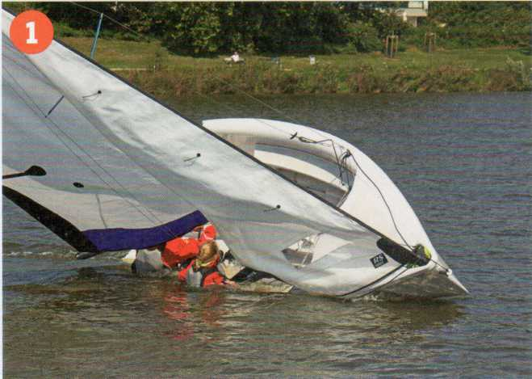
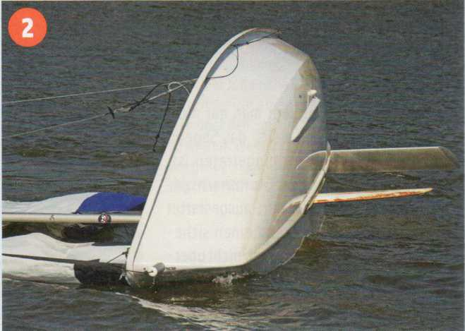
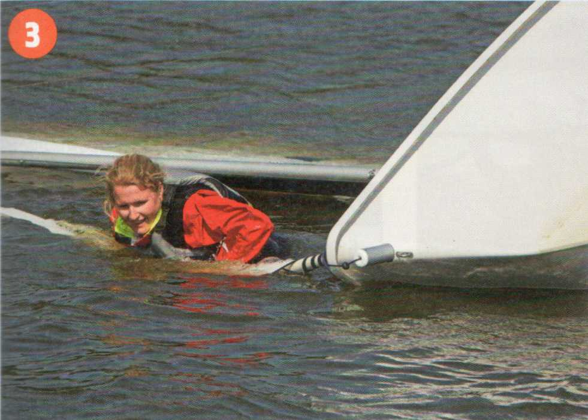
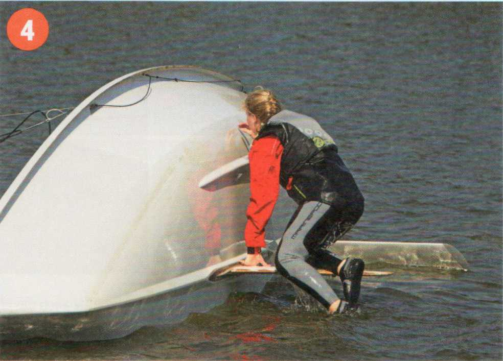
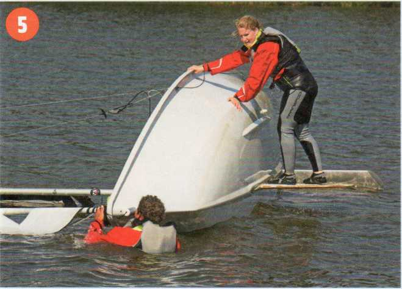
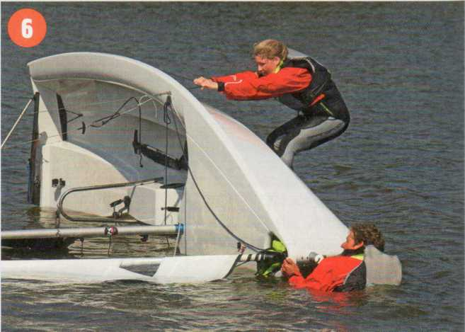
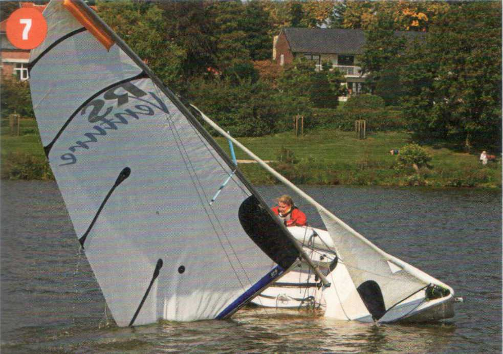
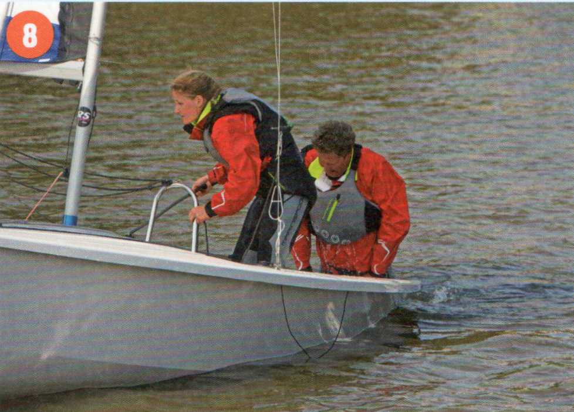
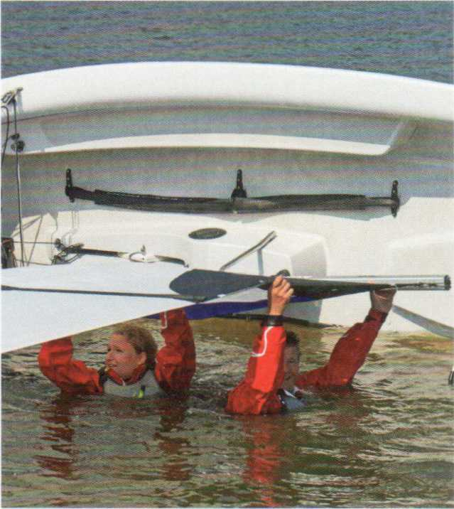

1 Обычно швертботы (Jollen) опрокидываются под ветер (Lee), экипаж (Crew) при этом часто катапультируется в грот (Großsegel).

2 ...или оказывается в воздушном пузыре под гротом.

3 Первая мера: развернуть нос (Bug) к ветру и ориентироваться в направлении шверта (Schwert).

4 Забраться на шверт ...

5 ... и продолжить разворачивать лодку к ветру.

6 Взяться за линь для восстановления (Kenterleine), раскачиваться всем весом тела и поднять лодку.

7 Вытащить топ мачты (Masttopp) (здесь с мешком против опрокидывания (Kentersack), предотвращающим переворот на 180°) из воды. При подъёме лодки быстро забраться через бортовую палубу (Seitendeck).

8 Затем второй член экипажа забирается через корму (Heck). Открыть шпигаты (Lenzer), разобрать шкоты (Schoten) и осушить лодку, идя полным курсом (raumschots). Без шпигатов экипажу придётся вычерпывать (pützen).
Все швертботы (Schwertboote) могут опрокинуться. Три причины ответственны за большинство опрокидываний под ветер:
► Неумелый поворот фордевинд (Halsen).
► Слишком резкое приведение (Anluven) в порыве (Bö) на курсе бейдевинд (Am Wind).
► Слишком быстрое, резкое приведение в порывах на полном курсе (Raumschots-Kurs).
Опрокидывание на ветер (Luv) случается реже и обычно имеет две причины:
► Когда экипаж на курсе бейдевинд далеко откренен на ветер и при сильном порыве гика-шкот (Großschot) внезапно и слишком сильно потравлен.
► Когда на полном курсе волна, проходящая наискось сзади под кормой, сильно кренит лодку на ветер, она выходит из-под руля (Ruder) под ветер. Свешивающийся за борт экипаж волочится по воде — лодка опрокидывается.
Современные лёгкие швертботы опрокидываются относительно быстро, но опытный экипаж может поставить их в кратчайшее время и при этом они почти не набирают воды.

Часто помогает также приподнять гик (Baum), чтобы дать выйти воздуху.
Прежде всего убедиться, что напарник не запутался где-то в лодке или в бегучем такелаже (laufendes Gut). Если кто-то оказался под парусом, плыть к задней шкаторине (Achterliek). Обычно под парусом образуется воздушный пузырь. Мокрая синтетическая ткань полностью герметична.
Когда экипаж разобрался с собой — не допустить полного переворота лодки (Durchkentern), повиснув на шверте или приподняв топ мачты.
Перед подъёмом снять шкоты — если они были закреплены — из стопоров (Klemmen). Иначе паруса могут наполниться ветром и лодка уйдёт сама. По возможности всегда держать связь с лодкой линем (шкотом).
Развернуть нос к ветру необходимо при опрокидывании на ветер. Иначе ветер подхватит приподнятый парус и перевернёт лодку на другой борт. После опрокидывания под ветер нос к ветру облегчает подъём.
Более тяжёлые крейсерские лодки имеют более высокую собственную остойчивость и потому опрокидываются не так быстро. Но если они опрокинулись, поднять их без посторонней помощи практически невозможно. Что же делать, если это произошло?
► Сесть верхом на всплывший борт. Если лодка перевернулась на 180° — сесть на днище. Чтобы привлечь внимание, повторно медленно полукругом поднимать руки до уровня головы. Это считается сигналом бедствия. Разумеется, также и для терпящих бедствие виндсёрферов.
► Всплывшие предметы — весло, вёдра и т. п. — спасать только если они в пределах досягаемости.
| Запомните |
|---|
| Принципиально никогда не покидать лодку после опрокидывания. Даже для того, чтобы позвать на помощь. Как показывает опыт, расстояние до берега обычно значительно недооценивается, а собственные силы переоцениваются, особенно при волнах и низкой температуре воды. Кроме того, дрейфующую лодку спасателям заметить гораздо легче, чем пловца. |
|
Типичные ошибки начинающих |
|---|
|
После опрокидывания висеть верхом или на животе на
«высоком борту» (вместо того чтобы сразу соскользнуть на шверт) — это часто
приводит к полному перевороту (мачтой вниз). Подъём лодки поперёк ветра под ветер: лодка немедленно опрокидывается на другой борт. Шкоты не отданы. Нет линевой связи с лодкой. |
Если на помощь приходит моторная лодка — или парусная яхта под мотором — обязательно убедиться, что в воде ничего не плавает — шкоты, лини, одежда — что может попасть в винт (Propeller). При необходимости предупредить моторную лодку криком.